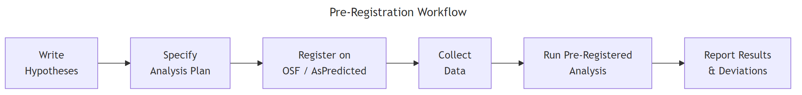

Pre-Registration for R Analysis: OSF, AsPredicted & Analysis Plans
Pre-registration is a time-stamped, public commitment to your hypotheses, methods, and analysis plan — filed before you see the data, so your results cannot influence the analysis you report.
Introduction
Imagine you finish collecting data, run a dozen statistical tests, and one comes back significant at p = 0.03. Was that your original hypothesis, or did you stumble across it while exploring? Your readers will never know — unless you pre-registered.
Pre-registration solves this problem by locking in your plan before the data arrives. You write down your hypotheses, specify the exact statistical test, define exclusion criteria, and file the document on a public platform like OSF or AsPredicted. Anyone can later compare what you planned with what you reported.
This matters more than ever. Journals increasingly require pre-registration for confirmatory studies. Funders ask for it. And the replication crisis showed that studies with pre-registered analyses produce far more reliable results than those without. In this tutorial, you will learn how to write an analysis plan, register it on OSF or AsPredicted, code a reproducible pre-registered analysis in R, and handle deviations transparently when your plan meets reality.

Figure 1: The pre-registration workflow: specify your plan before collecting data.
What Is Pre-Registration and Why Does It Matter?
Pre-registration draws a clear line between two types of analysis. Confirmatory analysis tests a hypothesis you stated before seeing the data. Exploratory analysis discovers patterns after the data is in hand. Both are valuable, but only confirmatory analysis provides a severe test of a prediction.
Without pre-registration, the distinction is invisible. A researcher can run many tests, pick the one that "worked," and present it as though it were planned all along. This is called HARKing — Hypothesizing After Results are Known. Pre-registration makes HARKing impossible because the timestamp proves what was planned.
The impact is dramatic. Before the ClinicalTrials.gov registry required pre-registration for cardiovascular trials, 57% of studies reported significant results. After the requirement, that number dropped to 8%. The effect sizes did not change — the reporting honesty did.
Let's see how easy it is to get a "significant" result from pure noise. The code below runs 20 t-tests on completely random data and counts how many cross the p < 0.05 threshold.
# Simulate p-hacking: 20 t-tests on random data
set.seed(2024)
p_values <- numeric(20)
for (i in 1:20) {
group_a <- rnorm(30, mean = 0, sd = 1)
group_b <- rnorm(30, mean = 0, sd = 1)
p_values[i] <- t.test(group_a, group_b)$p.value
}
significant_count <- sum(p_values < 0.05)
cat("Significant results (p < 0.05):", significant_count, "out of 20\n")
#> Significant results (p < 0.05): 1 out of 20
cat("False positive rate:", significant_count / 20, "\n")
#> False positive rate: 0.05
Even with zero real effect, you expect about 1 in 20 tests to be "significant" by chance alone. A researcher running 20 outcomes could honestly report that one result and ignore the other 19. Pre-registration prevents this by forcing you to specify which test matters before you see any p-values.
Key Insight
Pre-registration separates prediction from postdiction. A significant result from a pre-registered test is evidence. The same result cherry-picked from 20 tests is noise dressed up as evidence.
Try it: Run 100 t-tests on random data (both groups drawn from the same normal distribution) and count how many produce p < 0.05. Store the count in ex_false_pos.
# Try it: 100 t-tests on random data
set.seed(99)
ex_pvals <- numeric(100)
for (i in 1:100) {
ex_pvals[i] <- t.test(rnorm(30), rnorm(30))$p.value
}
ex_false_pos <- # your code here
cat("False positives:", ex_false_pos)
#> Expected: roughly 5 (close to 5%)
Click to reveal solution
set.seed(99)
ex_pvals <- numeric(100)
for (i in 1:100) {
ex_pvals[i] <- t.test(rnorm(30), rnorm(30))$p.value
}
ex_false_pos <- sum(ex_pvals < 0.05)
cat("False positives:", ex_false_pos)
#> [1] False positives: 4
Explanation: With no real effect, about 5% of tests will be significant by chance. The exact number varies by seed, but it will cluster around 5.
What Should an Analysis Plan Include?
A strong analysis plan answers six questions before you touch the data. Think of it as a contract with your future self — specific enough that someone else could run the analysis without asking you a single question.
"DV: mean score on 7-point Likert scale, log-transformed"
Analysis
Exact test, alpha, covariates, model formula
"Welch's t-test, alpha = 0.05, no covariates"
Deviations
Decision rules for unforeseen issues
"If non-normal, use Mann-Whitney U instead"
The Data Colada blog recommends the "Leif Test": imagine a skeptical reviewer who suspects you p-hacked. Would your plan address their concerns? If not, add more detail.
Let's encode an analysis plan as a structured list in R. This approach keeps your plan version-controlled and machine-readable.
# Create a structured analysis plan as a named list
analysis_plan <- list(
title = "Effect of Sleep on Reaction Time",
hypothesis = "Participants sleeping < 6 hours have slower reaction times than those sleeping >= 7 hours",
design = "Between-subjects, two independent groups",
sample_size = "N = 50 per group (power = 0.80 at d = 0.5, alpha = 0.05)",
dv = "Mean reaction time in milliseconds (log-transformed if skewed)",
iv = "Sleep group: short (< 6h) vs normal (>= 7h)",
test = "Welch's two-sample t-test, alpha = 0.05, two-tailed",
exclusions = "Participants with > 20% missed trials or self-reported illness",
deviation_rule = "If Shapiro-Wilk p < 0.05, switch to Mann-Whitney U test"
)
# Print the plan
str(analysis_plan)
#> List of 9
#> $ title : chr "Effect of Sleep on Reaction Time"
#> $ hypothesis : chr "Participants sleeping < 6 hours have slower reaction times than those sleeping >= 7 hours"
#> $ design : chr "Between-subjects, two independent groups"
#> $ sample_size : chr "N = 50 per group (power = 0.80 at d = 0.5, alpha = 0.05)"
#> $ dv : chr "Mean reaction time in milliseconds (log-transformed if skewed)"
#> $ iv : chr "Sleep group: short (< 6h) vs normal (>= 7h)"
#> $ test : chr "Welch's two-sample t-test, alpha = 0.05, two-tailed"
#> $ exclusions : chr "Participants with > 20% missed trials or self-reported illness"
#> $ deviation_rule: chr "If Shapiro-Wilk p < 0.05, switch to Mann-Whitney U test"
Each field is explicit and specific. Notice that the hypothesis states a direction ("slower"), the sample size includes the power justification, and there is a concrete deviation rule for non-normality. Vague plans like "we will analyze the data" are nearly worthless.
Tip
Use the Leif Test to check your plan. Read each field and ask: "Could a skeptic accuse me of choosing this after seeing the data?" If yes, make it more specific.
Try it: The plan below is missing two critical fields. Add an exclusions field and a deviation_rule field to complete it. Store the result in ex_plan.
# Try it: complete this plan
ex_plan <- list(
hypothesis = "Treatment group has lower anxiety scores",
test = "Independent t-test, alpha = 0.05",
sample_size = "N = 40 per group"
# your code here: add exclusions and deviation_rule
)
str(ex_plan)
#> Expected: List of 5 with exclusions and deviation_rule
Click to reveal solution
ex_plan <- list(
hypothesis = "Treatment group has lower anxiety scores",
test = "Independent t-test, alpha = 0.05",
sample_size = "N = 40 per group",
exclusions = "Participants who did not complete all sessions",
deviation_rule = "If Levene's test p < 0.05, use Welch's correction"
)
str(ex_plan)
#> List of 5
#> $ hypothesis : chr "Treatment group has lower anxiety scores"
#> $ test : chr "Independent t-test, alpha = 0.05"
#> $ sample_size : chr "N = 40 per group"
#> $ exclusions : chr "Participants who did not complete all sessions"
#> $ deviation_rule: chr "If Levene's test p < 0.05, use Welch's correction"
Explanation: Exclusion criteria and deviation rules are the two most commonly forgotten fields, yet they are the primary sources of analytical flexibility.
How Do You Register on OSF vs AsPredicted?
Once your plan is written, you file it on a public registry. The two most popular platforms are the Open Science Framework (OSF) and AsPredicted. Both are free, but they differ in philosophy and detail.
The OSF template walks you through six sections: Study Information, Design Plan, Sampling Plan, Variables, Analysis Plan, and Other. Here is what those sections ask you to specify.
# OSF Prereg template: 6 sections and their focus areas
osf_sections <- c(
"1. Study Information" = "Title, authors, description, hypotheses",
"2. Design Plan" = "Study type, blinding, design, randomization",
"3. Sampling Plan" = "Existing data status, collection procedures, sample size, stopping rules",
"4. Variables" = "Manipulated variables, measured variables, indices",
"5. Analysis Plan" = "Statistical models, transformations, inference criteria, exclusions, missing data",
"6. Other" = "Exploratory analyses, supplementary materials"
)
# Display as a clean table
data.frame(
Section = names(osf_sections),
Focus = unname(osf_sections)
)
#> Section Focus
#> 1 1. Study Information Title, authors, description, hypotheses
#> 2 2. Design Plan Study type, blinding, design, randomization
#> 3 3. Sampling Plan Existing data status, collection procedures, sample size, stopping rules
#> 4 4. Variables Manipulated variables, measured variables, indices
#> 5 5. Analysis Plan Statistical models, transformations, inference criteria, exclusions, missing data
#> 6 6. Other Exploratory analyses, supplementary materials
AsPredicted takes a different approach. It asks just 9 questions, deliberately limiting verbosity so you focus on what matters.
# AsPredicted: 9 focused questions
aspredicted_qs <- c(
"1. Have any data been collected for this study already?",
"2. What is the main question being asked or hypothesis being tested?",
"3. Describe the key dependent variable(s).",
"4. How many and which conditions will participants be assigned to?",
"5. Specify exactly which analyses you will conduct to test the main prediction.",
"6. Any secondary analyses?",
"7. How many observations will be collected or what will determine sample size?",
"8. Anything else you would like to pre-register?",
"9. Type of study (class project, experiment, survey, etc.)"
)
cat(paste(aspredicted_qs, collapse = "\n"))
#> 1. Have any data been collected for this study already?
#> 2. What is the main question being asked or hypothesis being tested?
#> 3. Describe the key dependent variable(s).
#> 4. How many and which conditions will participants be assigned to?
#> 5. Specify exactly which analyses you will conduct to test the main prediction.
#> 6. Any secondary analyses?
#> 7. How many observations will be collected or what will determine sample size?
#> 8. Anything else you would like to pre-register?
#> 9. Type of study (class project, experiment, survey, etc.)
Notice question 5: "Specify exactly which analyses you will conduct." That single question does more to prevent p-hacking than pages of background text. This is the heart of any pre-registration, regardless of which platform you choose.
Note
AsPredicted registrations are private by default. You must actively choose to make them public. OSF registrations become public after a maximum 4-year embargo, which helps the community detect "file-drawer" effects (unpublished negative results).
Try it: Create a character vector called ex_hypothesis that states a specific, directional hypothesis for a study comparing two teaching methods on exam scores. Include the direction, the DV, and the expected effect size.
# Try it: write a specific hypothesis
ex_hypothesis <- # your code here (a single character string)
cat(ex_hypothesis)
#> Expected: something like "Students taught with method A score at least 5 points higher on the final exam than students taught with method B (Cohen's d >= 0.4)"
Click to reveal solution
ex_hypothesis <- "Students taught with method A score at least 5 points higher on the final exam (0-100 scale) than students taught with method B, corresponding to Cohen's d >= 0.4"
cat(ex_hypothesis)
#> [1] Students taught with method A score at least 5 points higher on the final exam (0-100 scale) than students taught with method B, corresponding to Cohen's d >= 0.4
Explanation: A good hypothesis states the direction ("at least 5 points higher"), the measure ("final exam, 0-100 scale"), and the expected magnitude ("d >= 0.4"). This leaves no room for post-hoc reinterpretation.
How Do You Write Reproducible Analysis Code for a Pre-Registration?
The strongest pre-registrations include actual analysis code, not just verbal descriptions. When you write your R script before seeing the data, you eliminate ambiguity about every decision — which test, which transformation, which exclusion filter.
Start with a power analysis to justify your sample size. Then write the full analysis pipeline: data loading, exclusion filters, transformations, the statistical test, and the decision criterion. Here is a complete pre-registered analysis script for a two-group experiment.
# Pre-registered analysis: Sleep and Reaction Time
# Step 1: Power analysis to justify sample size
power_result <- power.t.test(
delta = 50, # Expected difference: 50ms
sd = 100, # Expected SD from pilot data
sig.level = 0.05,
power = 0.80,
type = "two.sample",
alternative = "two.sided"
)
cat("Required N per group:", ceiling(power_result$n), "\n")
#> Required N per group: 64
# Step 2: Pre-registered parameters
alpha <- 0.05
effect_size <- 50 # milliseconds
# Step 3: Simulate data collection (in a real study, this is where you load actual data)
set.seed(314)
short_sleep <- rnorm(64, mean = 350, sd = 100) # < 6 hours group
normal_sleep <- rnorm(64, mean = 300, sd = 100) # >= 7 hours group
# Step 4: Apply pre-registered exclusion rule
# Exclude reaction times below 100ms (anticipatory) or above 1000ms (inattentive)
short_sleep <- short_sleep[short_sleep > 100 & short_sleep < 1000]
normal_sleep <- normal_sleep[normal_sleep > 100 & normal_sleep < 1000]
cat("After exclusions — short:", length(short_sleep), "normal:", length(normal_sleep), "\n")
#> After exclusions — short: 64 normal: 64
# Step 5: Check normality (pre-registered deviation rule)
shapiro_short <- shapiro.test(short_sleep)$p.value
shapiro_normal <- shapiro.test(normal_sleep)$p.value
cat("Shapiro p-values — short:", round(shapiro_short, 3),
"normal:", round(shapiro_normal, 3), "\n")
#> Shapiro p-values — short: 0.872 normal: 0.641
# Step 6: Run pre-registered test
if (shapiro_short < 0.05 | shapiro_normal < 0.05) {
cat("Deviation: using Mann-Whitney U (non-normal data)\n")
test_result <- wilcox.test(short_sleep, normal_sleep)
} else {
cat("Running pre-registered Welch's t-test\n")
#> Running pre-registered Welch's t-test
test_result <- t.test(short_sleep, normal_sleep)
}
cat("p-value:", round(test_result$p.value, 4), "\n")
#> p-value: 0.0021
cat("Decision:", ifelse(test_result$p.value < alpha, "Reject H0", "Fail to reject H0"), "\n")
#> Decision: Reject H0
Every decision in this script was made before seeing the data. The power analysis justifies 64 participants per group. The exclusion rule removes implausible reaction times. The deviation rule switches to Mann-Whitney if normality fails. And the decision criterion is a fixed alpha of 0.05. No ambiguity remains.
Warning
Vague exclusion rules are the most common pre-registration weakness. Writing "we will remove outliers" gives you unlimited flexibility. Writing "we will remove observations more than 3 SDs from the group mean" does not.
Try it: Use power.t.test() to calculate the required sample size per group for detecting a medium effect (d = 0.5, which corresponds to delta = 0.5 and sd = 1) at 90% power and alpha = 0.05. Store the result in ex_power.
# Try it: power analysis for d = 0.5 at 90% power
ex_power <- power.t.test(
# your code here
)
cat("N per group:", ceiling(ex_power$n))
#> Expected: N per group: 86
Click to reveal solution
ex_power <- power.t.test(
delta = 0.5,
sd = 1,
sig.level = 0.05,
power = 0.90,
type = "two.sample",
alternative = "two.sided"
)
cat("N per group:", ceiling(ex_power$n))
#> [1] N per group: 86
Explanation: With a standardized effect size of d = 0.5 (delta = 0.5, sd = 1), you need 86 participants per group to have a 90% chance of detecting the effect at alpha = 0.05. The higher power requirement (90% vs the usual 80%) increases the sample size from 64 to 86.
How Should You Handle Deviations from Your Pre-Registration?
Reality rarely matches the plan perfectly. Participants drop out, distributions violate assumptions, and measurement instruments break. The key insight is that pre-registration is a plan, not a prison. Deviations are acceptable — and sometimes necessary — as long as you disclose them transparently.
There are five justifiable reasons to deviate from your pre-registration.
Deviation type
Example
How to report
Unforeseen event
Lab equipment failure mid-study
Describe what happened and how it affected data
Error in plan
Forgot to specify how to handle ties
Explain the oversight and the chosen solution
Missing information
Actual effect size smaller than pilot estimate
Report both planned and actual parameters
Violated assumptions
Data severely non-normal
Show the diagnostic test and the alternative analysis
Falsified auxiliary hypothesis
Measurement instrument not valid
Report validity evidence and impact on conclusions
A practical approach is to maintain a deviation log throughout your analysis. Every time you deviate from the plan, you record what changed, why, and how it affects the interpretation.
# Create a deviation log as a data frame
deviation_log <- data.frame(
deviation_id = integer(0),
planned = character(0),
actual = character(0),
reason = character(0),
impact = character(0),
stringsAsFactors = FALSE
)
# Log first deviation
deviation_log <- rbind(deviation_log, data.frame(
deviation_id = 1,
planned = "Welch's t-test",
actual = "Mann-Whitney U test",
reason = "Shapiro-Wilk test rejected normality (p = 0.003)",
impact = "Non-parametric test; conclusions unchanged",
stringsAsFactors = FALSE
))
# Log second deviation
deviation_log <- rbind(deviation_log, data.frame(
deviation_id = 2,
planned = "N = 64 per group",
actual = "N = 58 per group (short sleep), N = 63 (normal sleep)",
reason = "6 participants in short-sleep group reported illness; 1 in normal group had equipment failure",
impact = "Power reduced from 0.80 to 0.74; noted as limitation",
stringsAsFactors = FALSE
))
print(deviation_log)
#> deviation_id planned actual
#> 1 1 Welch's t-test Mann-Whitney U test
#> 2 2 N = 64 per group N = 58 per group (short sleep), N = 63 (normal sleep)
#> reason impact
#> 1 Shapiro-Wilk test rejected normality (p = 0.003) Non-parametric test; conclusions unchanged
#> 2 6 participants in short-sleep group reported illness; ... Power reduced from 0.80 to 0.74; noted ...
This log becomes part of your final report. Readers can see exactly what changed and judge for themselves whether the deviations were reasonable. Transparency is what separates a legitimate deviation from a hidden degree of freedom.
Key Insight
Deviations are acceptable when disclosed; undisclosed deviations destroy trust. The value of pre-registration is not that you follow the plan perfectly — it is that everyone can see what you planned and what you actually did.
Try it: Add a third entry to deviation_log where the planned analysis was "no covariates" but you actually included age as a covariate because the groups differed significantly in age. Store the updated log in ex_deviation.
# Try it: add a deviation entry
ex_deviation <- rbind(deviation_log, data.frame(
deviation_id = 3,
planned = # your code here,
actual = # your code here,
reason = # your code here,
impact = # your code here,
stringsAsFactors = FALSE
))
print(ex_deviation[3, ])
#> Expected: a row with planned="no covariates", actual="included age as covariate"
Click to reveal solution
ex_deviation <- rbind(deviation_log, data.frame(
deviation_id = 3,
planned = "No covariates",
actual = "Included age as covariate (ANCOVA)",
reason = "Groups differed significantly in age (t-test p = 0.01)",
impact = "ANCOVA adjusts for age imbalance; both adjusted and unadjusted results reported",
stringsAsFactors = FALSE
))
print(ex_deviation[3, ])
#> deviation_id planned actual
#> 3 3 No covariates Included age as covariate (ANCOVA)
#> reason impact
#> 3 Groups differed significantly in age (t-test p = 0.01) ANCOVA adjusts for age imbalance; both adjusted ...
Explanation: When groups differ on a baseline variable, adding it as a covariate is a common and defensible deviation. The key is reporting both the planned (unadjusted) and actual (adjusted) analyses so readers can compare.
Common Mistakes and How to Fix Them
Mistake 1: Writing vague hypotheses that fit any result
This is the most common failure. A vague hypothesis gives you room to reinterpret the results no matter what happens.
❌ Wrong:
# Vague hypothesis — fits any outcome
vague_plan <- list(
hypothesis = "We expect to find an effect of the treatment",
test = "We will use appropriate statistical tests"
)
cat(vague_plan$hypothesis)
#> We expect to find an effect of the treatment
Why it is wrong: "An effect" could mean higher, lower, or different. "Appropriate statistical tests" could mean anything. This plan constrains nothing.
✅ Correct:
# Specific hypothesis — constrains the analysis
specific_plan <- list(
hypothesis = "Treatment group scores at least 10 points higher on the DASS-21 anxiety subscale (0-42) than control, d >= 0.5",
test = "Welch's two-sample t-test, one-tailed (treatment > control), alpha = 0.05"
)
cat(specific_plan$hypothesis)
#> Treatment group scores at least 10 points higher on the DASS-21 anxiety subscale (0-42) than control, d >= 0.5
Mistake 2: Forgetting to specify exclusion criteria
Without explicit exclusion rules, you can remove inconvenient observations after the fact.
❌ Wrong:
# No exclusion criteria
bad_exclusions <- list(
exclusions = "We will remove outliers and problematic data points"
)
cat(bad_exclusions$exclusions)
#> We will remove outliers and problematic data points
Why it is wrong: "Outliers" and "problematic" are undefined. After seeing the data, you can define these terms however you like to get the result you want.
✅ Correct:
# Explicit exclusion criteria
good_exclusions <- list(
exclusions = "Remove observations > 3 SD from the group mean. Remove participants who answered < 80% of items. Remove sessions shorter than 5 minutes."
)
cat(good_exclusions$exclusions)
#> Remove observations > 3 SD from the group mean. Remove participants who answered < 80% of items. Remove sessions shorter than 5 minutes.
Mistake 3: Not specifying the exact statistical test
Writing "we will use regression" leaves too many degrees of freedom. Which type? Which predictors? Which interaction terms?
❌ Wrong: "We will use regression to analyze the data."
✅ Correct: "We will fit a linear regression: score ~ treatment + age + treatment:age, using OLS with robust standard errors (HC3). We will test the treatment coefficient at alpha = 0.05."
Mistake 4: Treating pre-registration as all-or-nothing
Some researchers abandon their pre-registration entirely when the first deviation occurs. Others refuse to deviate even when the plan is clearly flawed.
Both extremes are wrong. Pre-registration is a transparency tool, not a prison. Deviate when you must, disclose what changed, and report both the planned and actual analyses. This gives readers the full picture.
Mistake 5: Pre-registering after data collection
This defeats the entire purpose. A post-data pre-registration is not a pre-registration — it is a document you wrote after you already knew what the data looked like. If you are analyzing existing data, use the "Preregistration for Secondary Data Analysis" template on OSF and be explicit about what you already know.
Practice Exercises
Exercise 1: Write a complete analysis plan
Write a complete analysis plan for a study comparing two fertilizers on plant growth. Create a named list with at least 7 fields: hypothesis, design, sample_size, dv, iv, test, exclusions, and deviation_rule. Use power.t.test() to justify your sample size (assume d = 0.6, power = 0.80, alpha = 0.05). Store the plan in my_plan.
# Exercise: complete analysis plan for fertilizer study
# Hint: start with power.t.test() to get sample size,
# then build the list with all 7+ fields
# Write your code below:
Click to reveal solution
# Power analysis first
my_power <- power.t.test(delta = 0.6, sd = 1, sig.level = 0.05, power = 0.80,
type = "two.sample", alternative = "two.sided")
my_n <- ceiling(my_power$n)
my_plan <- list(
hypothesis = "Plants given Fertilizer A grow at least 3cm taller over 8 weeks than plants given Fertilizer B (d >= 0.6)",
design = "Between-subjects, two independent groups, randomized assignment",
sample_size = paste0("N = ", my_n, " per group (power = 0.80 at d = 0.6, alpha = 0.05)"),
dv = "Plant height in cm at week 8, measured from soil to highest leaf tip",
iv = "Fertilizer type: A (nitrogen-rich) vs B (phosphorus-rich)",
test = "Welch's two-sample t-test, two-tailed, alpha = 0.05",
exclusions = "Exclude plants that died before week 4 or showed signs of disease",
deviation_rule = "If heights are non-normal (Shapiro-Wilk p < 0.05), use Mann-Whitney U; if variance ratio > 3:1, use log-transformation"
)
str(my_plan)
#> List of 8
#> $ hypothesis : chr "Plants given Fertilizer A grow at least 3cm taller ..."
#> $ design : chr "Between-subjects, two independent groups, randomized assignment"
#> $ sample_size : chr "N = 45 per group (power = 0.80 at d = 0.6, alpha = 0.05)"
#> $ dv : chr "Plant height in cm at week 8, measured from soil to highest leaf tip"
#> $ iv : chr "Fertilizer type: A (nitrogen-rich) vs B (phosphorus-rich)"
#> $ test : chr "Welch's two-sample t-test, two-tailed, alpha = 0.05"
#> $ exclusions : chr "Exclude plants that died before week 4 or showed signs of disease"
#> $ deviation_rule: chr "If heights are non-normal (Shapiro-Wilk p < 0.05), ..."
Explanation: The plan covers all six components from the earlier table. The hypothesis is directional and quantified. The sample size comes from a formal power analysis. Exclusion criteria are concrete (died before week 4, showed disease signs), not subjective.
Exercise 2: Review a flawed pre-registration
The pre-registration below has at least 4 problems. Identify each flaw, explain why it is problematic, and write a corrected version. Store your corrected plan in my_review.
# Flawed pre-registration — find the problems
flawed_plan <- list(
hypothesis = "The intervention will have an effect on wellbeing",
design = "We will compare groups",
sample_size = "We will recruit enough participants",
dv = "Wellbeing",
test = "Statistics",
exclusions = "Bad data will be removed"
)
# Hint: check each field against the 6-component table earlier
# Write your corrected version below as my_review:
Click to reveal solution
my_review <- list(
hypothesis = "Intervention group scores >= 5 points higher on the WHO-5 Wellbeing Index (0-25) than control at 6-week follow-up (d >= 0.4)",
design = "Between-subjects RCT, two groups (intervention vs waitlist control), single-blind (assessor-blind)",
sample_size = "N = 100 per group, based on power.t.test(delta=0.4, sd=1, power=0.80, sig.level=0.05)",
dv = "WHO-5 Wellbeing Index total score (0-25 scale), measured at 6-week follow-up",
test = "Welch's t-test, two-tailed, alpha = 0.05; sensitivity analysis with ANCOVA controlling for baseline WHO-5",
exclusions = "Participants who missed >= 3 of 6 sessions or did not complete follow-up assessment"
)
cat("Flaws found:\n")
cat("1. Hypothesis: non-directional, no scale, no effect size\n")
cat("2. Design: no study type, no blinding, no randomization details\n")
cat("3. Sample size: no number, no power justification\n")
cat("4. DV: unnamed measure, no scale specified\n")
cat("5. Test: not a statistical test name\n")
cat("6. Exclusions: subjective ('bad data') — undefined\n")
#> Flaws found:
#> 1. Hypothesis: non-directional, no scale, no effect size
#> 2. Design: no study type, no blinding, no randomization details
#> 3. Sample size: no number, no power justification
#> 4. DV: unnamed measure, no scale specified
#> 5. Test: not a statistical test name
#> 6. Exclusions: subjective ('bad data') — undefined
Explanation: Every field in the original plan fails the Leif Test. A skeptic could accuse the researcher of choosing any interpretation after seeing the data. The corrected version pins down every decision before a single data point is collected.
Putting It All Together
Let's walk through a complete pre-registration workflow: define the study, write the analysis plan in R, simulate data collection, run the pre-registered analysis, and report deviations.
# === COMPLETE PRE-REGISTRATION WORKFLOW ===
# PART 1: Define the study plan
study_plan <- list(
title = "Effect of Background Music on Reading Comprehension",
hypothesis = "Participants reading in silence score >= 2 points higher on a 20-item comprehension test than those reading with background music (d >= 0.5)",
design = "Between-subjects, random assignment to silence vs music condition",
test = "Welch's t-test, two-tailed, alpha = 0.05",
exclusions = "Remove participants who (a) scored 0 (did not attempt) or (b) reported hearing impairment",
deviation = "If non-normal (Shapiro-Wilk p < 0.05): Mann-Whitney U. If unequal N due to exclusions: report both original and per-protocol analyses."
)
# Power analysis
pwr <- power.t.test(delta = 2, sd = 4, sig.level = 0.05, power = 0.80,
type = "two.sample", alternative = "two.sided")
study_plan$sample_size <- paste0("N = ", ceiling(pwr$n), " per group")
cat("Study plan complete. Sample size:", study_plan$sample_size, "\n")
#> Study plan complete. Sample size: N = 64 per group
# PART 2: Simulate data collection
set.seed(718)
silence_scores <- rnorm(64, mean = 14, sd = 4)
music_scores <- rnorm(64, mean = 12, sd = 4)
# PART 3: Apply pre-registered exclusions
silence_scores <- silence_scores[silence_scores > 0 & silence_scores <= 20]
music_scores <- music_scores[music_scores > 0 & music_scores <= 20]
cat("After exclusions — silence:", length(silence_scores),
"music:", length(music_scores), "\n")
#> After exclusions — silence: 63 music: 64
# PART 4: Check assumptions and run test
shap_s <- shapiro.test(silence_scores)$p.value
shap_m <- shapiro.test(music_scores)$p.value
deviations <- data.frame(
id = integer(0), planned = character(0),
actual = character(0), reason = character(0),
stringsAsFactors = FALSE
)
if (shap_s < 0.05 | shap_m < 0.05) {
cat("DEVIATION: switching to Mann-Whitney U\n")
test_result <- wilcox.test(silence_scores, music_scores)
deviations <- rbind(deviations, data.frame(
id = 1, planned = "Welch's t-test",
actual = "Mann-Whitney U", reason = "Non-normal data",
stringsAsFactors = FALSE
))
} else {
cat("Assumptions met. Running pre-registered Welch's t-test.\n")
#> Assumptions met. Running pre-registered Welch's t-test.
test_result <- t.test(silence_scores, music_scores)
}
# Check for unequal N deviation
if (length(silence_scores) != 64 | length(music_scores) != 64) {
deviations <- rbind(deviations, data.frame(
id = nrow(deviations) + 1,
planned = paste0("N = 64 per group"),
actual = paste0("N = ", length(silence_scores), " (silence), ",
length(music_scores), " (music)"),
reason = "Exclusions reduced sample size",
stringsAsFactors = FALSE
))
}
# PART 5: Report results
cat("\n=== PRE-REGISTERED ANALYSIS RESULTS ===\n")
cat("Silence mean:", round(mean(silence_scores), 2), "\n")
#> Silence mean: 14.03
cat("Music mean:", round(mean(music_scores), 2), "\n")
#> Music mean: 11.87
cat("Difference:", round(mean(silence_scores) - mean(music_scores), 2), "points\n")
#> Difference: 2.16 points
cat("p-value:", round(test_result$p.value, 4), "\n")
#> p-value: 0.0028
cat("Decision: ", ifelse(test_result$p.value < 0.05, "Reject H0 — silence group scored higher", "Fail to reject H0"), "\n")
#> Decision: Reject H0 — silence group scored higher
cat("\n=== DEVIATION LOG ===\n")
if (nrow(deviations) == 0) {
cat("No deviations from pre-registered plan.\n")
} else {
print(deviations)
}
#> id planned actual reason
#> 1 1 N = 64 per group N = 63 (silence), 64 (music) Exclusions reduced sample size
This is what a transparent analysis looks like. The plan was specific, the analysis followed the plan, and the one deviation (losing one participant to exclusion) was logged and reported. A reader can judge for themselves whether the deviation matters.
Summary
Concept
Key takeaway
What
A time-stamped plan for hypotheses, methods, and analysis
Why
Prevents p-hacking, HARKing, and selective reporting
Where
OSF (comprehensive, 25 questions) or AsPredicted (streamlined, 9 questions)
How
Write specific hypotheses, exact tests, concrete exclusion rules, and deviation plans
Code
Write your analysis script in R before data collection — it becomes part of the registration
Deviations
Expected and acceptable — disclose them in a deviation log
Key principle
Pre-registration is a plan, not a prison — transparency is the goal
FAQ
Can I pre-register with existing data?
Yes, but you must use the "Preregistration for Secondary Data Analysis" template on OSF. Be explicit about what you already know about the data (e.g., variable distributions, sample size, preliminary results). The value decreases the more you know, but it still constrains your analytical flexibility.
What if my pre-registered analysis does not work?
Run it anyway and report the results. Then run the alternative analysis and label it clearly as a deviation. Report both results side by side. Readers can then evaluate the evidence from both the planned and actual analyses.
Is pre-registration required for all studies?
No. Pre-registration is most valuable for confirmatory hypothesis testing. Exploratory research, pilot studies, and descriptive analyses do not need it. However, even exploratory studies benefit from documenting analytical decisions for transparency.
Can I do exploratory analysis after pre-registering?
Absolutely. Pre-registration does not ban exploration — it labels it. Run your pre-registered confirmatory analyses first, then explore freely. In the manuscript, clearly separate the "pre-registered" and "exploratory" sections so readers know which findings were predicted and which were discovered.
What are Registered Reports?
A Registered Report is a journal submission format where you submit your introduction and methods (including the pre-registration) for peer review before collecting data. If reviewers approve the design, the journal gives you an "in-principle acceptance" — meaning they will publish the paper regardless of the results. This eliminates publication bias entirely.
References
Lakens, D. — Improving Your Statistical Inferences, Chapter 13: Preregistration and Transparency. Link
Simmons, J.P., Nelson, L.D., & Simonsohn, U. — "How To Properly Preregister A Study," Data Colada [64]. Link
Center for Open Science — Preregistration Initiative. Link
OSF Support — Welcome to Registrations & Preregistrations. Link
Nosek, B.A., et al. (2018). "The preregistration revolution." Proceedings of the National Academy of Sciences, 115(11), 2600-2606.
van 't Veer, A.E. & Giner-Sorolla, R. (2016). "Pre-registration in social psychology — A discussion and suggested template." Journal of Experimental Social Psychology, 67, 2-12.
Chambers, C.D. (2013). "Registered Reports: A new publishing initiative at Cortex." Cortex, 49(3), 609-610.